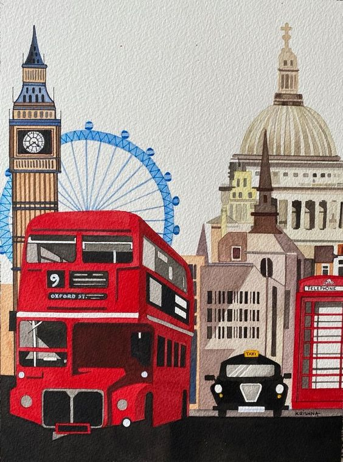

Добро пожаловать в школу иностранных языков "InterLingua"!

Членство в ассоциациях международного образования: ICEF, English UK, Business English UK, EAQA
|
Наши контакты: |
|---|

Мы преподаем всем:
- Взрослым:
- Английский
- Немецкий
- Французский
- Детям:
- Английский
- Китайский
видение жизни.
/Федерико Фелини/
Сотни обучающихся компаний
Дмитрий Игнатенко,
директор компании "InterLingua Services"
«Суть нашей работы в том, чтобы собрать в команду лучших профессионалов, дать им возможности для развития и творчества, ценить вклад каждого, создавать атмосферу свободы и помогать раскрыться талантам.Мы стремимся применять самые эффективные методики обучения, чтобы каждый наш студент смог достичь поставленных целей в изучении иностранного языка и, в итоге, улучшить качество своей жизни»
иметь много ключей к одному замку.
/Вольтер/
- Преподаватели английского языка
- Преподаватели для уровня А1
- 1)Ткаченко Юлия Сергеевна
- Преподаватели для уровня B1
- 1)Петрова Александра Александровна
- Преподаватели немецкого языка
- Преподаватели для уровня А1
- Бобрик Алексей Николаевич
- Преподаватели для уровня B1
- Добрынин Илья Петрович
расширение сферы всего того,
что мы вообще можем изучить.
/Ханс Георг Гадамер/